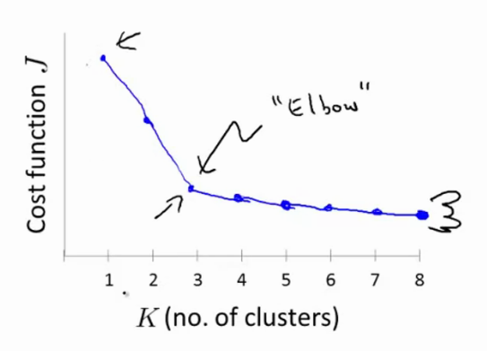
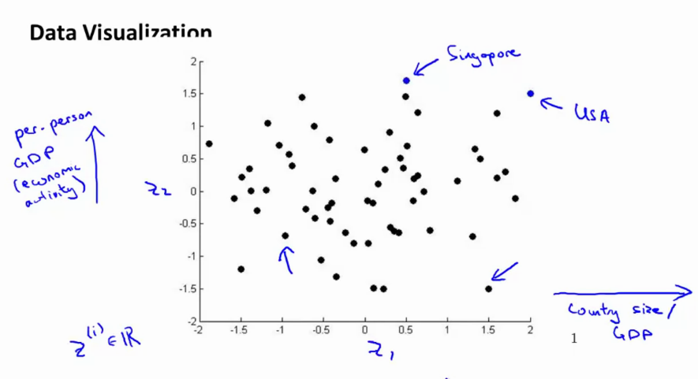
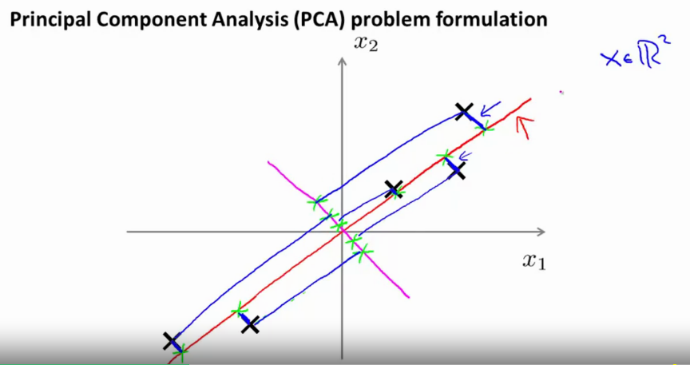
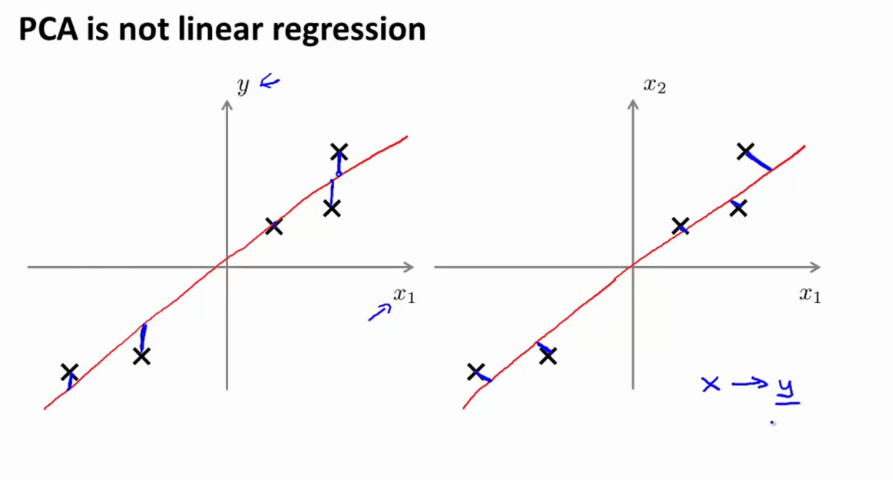
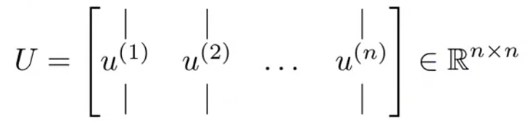
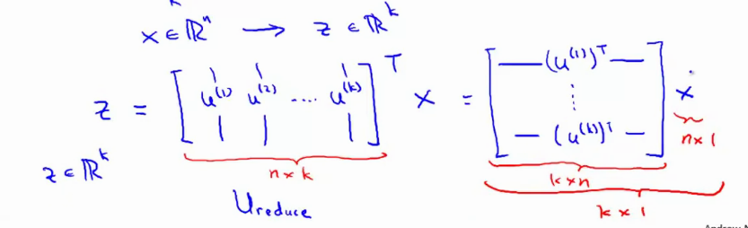
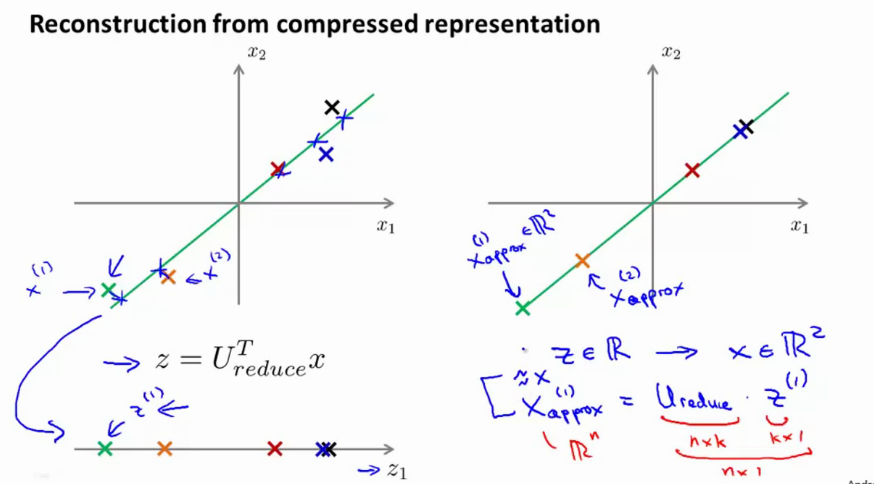

assign cluster centroids;
While !converged {
1) Cluster assignment step (assign each datapoint to the closest cluster)
2) Move centroid step (move the centroids to a new point, which is the mean of all the points in the cluster) --> converges if no movement is observed
}
Input:
K (number of clusters)
Training set {x(1),x(2),x(3),...,x(m)}∈Rn (drop x0 for convention)
Randomly initialize K centroids μ1,μ2,...,μK∈Rn
while not(converged) {
fori=1:m
c_i := index(from 1 to K)
%of cluster centroid closest to x_i, calculated by taking the norm between x_i and mu_k --> min||x_i - mu_k||^2 and find kendfor k=1:K
mu_k := average(mean of points assigned to cluster k) % mean position of each of the points 1/m * sum(x(k)) in R^n
}
If a cluster centroid has 0 points, delete it
stop if convergence has been reached (ie if no cluster movement is performed)
if the clusters are non-well-seperated K-means can still solve it.
Optimization objective
c(i) = index of cluster (1,2,...K) to which an example x(i) is currently assigned
μk = cluster centroid k (μk∈Rn)
μc(i) = cluster centroid of cluster to which example x(i) has been assigned.
The optimization objective then becomes:
J(c(1),...c(m),μ1,...μK)=m1i=1∑m∣∣location of x(i)x(i)−cluster centroid that belongs to x(i)μc(i)∣∣2
Where the cluster assignment step minimizes the above, while keeping the cluster centroids fixed.
Random initialization
Remember the K-means clustering algorithm. The first step is to randomly initialize the cluster centroids, but how?
we should have the number of clusters < number of samples, i.e. K<m.
randomly pick K training samples, set μ1,μ2,.....,μK equal to these K samples.
this means that K-means can converge to different solutions! K-means can end up in local optima of the distortion function J
To solve this, we can initialize K-means more than once. In other words, you execute it somewhere between 50 - 1000 times. Initialize, run k-means, get lowest distortion J.
Pick clustering that gave the lowest cost/distortion J.
if you have a low number of clusters (ie K=2-10), its really important to run it multiple times.
Choosing the number of clusters
it is an ambiguous question
this is part of unsupervised learning.
should have an automatic algorithm to choose, for example the elbow method
Elbow method
vary K
run K-means with 1 cluster, get cost
run K-means with 2 clusters, get cost
...
plot the result .you get a curve how the distrotion geos for increasing number of clusters
you get an elbow shape (see fig below), select the "elbow"

Fairly often the curve will be much more ambiguous, and so it's not necessarily applicable (the location of the elbow is not very clear).
It's worth a shot, but don't get your hopes up
Dimensionality Reduction
As data compression method
to compress data from 2D to 1D in order to reduce redundancy, by removing highly correlated features
x(1)∈R2→z(1)∈R
x(2)∈R2→z(2)∈R
also possible from 3D to 2D, ....
Take the n dimensional data (3D)
project it onto a n−1 dimensional manifold (2D)
replot ..
As data visualisation method

PCA Problem Formulation
Imagine x∈R2
Before you use PCA, make sure the data is zero mean and normalized.

Project x1,x2 onto a new lower dimensional surface z, so that the projection error onto this surface is minimized.
Reduce from 2D to 1D: find a direction (vector u(i)∈Rn) onto which to project the data so as to minimize the projection error.
More generally, we want to use n-Dimensional to k-Dimensional reductions. Find k vectors u(1),u(2),u(3),...u(k) onto which to project the data, so as to mimize the projection error.
PCA != linear regression. In LR , we are minimizing the distance between the point and the value predicted by the hypothesis (left figure below0) (map from x→y). in PCA, we try to minimize the distance between the projection of the point to the line (rigth figure)

PCA
Preprocessing
Given training set {x(1),x(2),x(3),...,x(m)}
Preprocessing is done by performing feature scaling / mean normalization:
μj=m1i=1∑mxj(i)⇒xj:=xj−μj
Finding the components
proof is beyond scope of this course
We want to reduce from n-dimensional to k-dimensional
Use the covariance matrix
nxnΣ=m1i=1∑n(nx1x(i))(1xnx(i))T
Compute the eigenvectors of the matrix Σ, by using Singular Value Decomposition (SVD)
[U, S, V] = svd(Sigma); % can also use eig(Sigma) % U = eigenvectors (nxn)
The covariance matrix is always symmetric positive definite.
U will be the eigenvectors, ie a nxn matrix. where the columns are the componentes. We use the first k columns of this matrix as the dimensions.

Take the first k columns to get a matrix Ureduce=nxk.
Then

% get sigma
Sigma = (1/m) * X' * X;
% apply svd
[U, S, V] = svd(Sigma);
% reduce it by taking first k columns and calculate new basis z
z = U(:, 1:k)'*X; % x in R^n, not using x0=1!
Reconstruction from Compressed representation
Remember that the compressed representation was created using z=UreduceTx;
Given a point z∈R, can we map it back to x∈R2
xapprox=Ureduce⋅z
what you get back are points that lie on the projection surface / line z.

The variance of the data after PCA is equal to
∑i=1nSii∑i=1kSii
Which means that in the case of k=n the variance remains the same, and xapprox=x for each sample.
Choosing the number of principle components
PCA tries to minimize the average squared projection error, ie
m1i=1∑m∣∣x(i)−xapprox(i)∣∣2
The total variation in the data is
m1i=1∑m∣∣x(i)∣∣2
Typically, choose k to be the smallest value so that
In other words, that 99% of the variance is retained. You can lower this to 95, but 99% is common. In order to retain most of the variance you can typically reduce the data by quite a lot.
Algo
k=1% 1) compute U_reduce, z1, ,.....% 2) check if retained variacne < 0.01
k = 2
but this is very slow. Its better to use svd to do it more efficiently
Computing svd with
[U, S, V] = svd(Sigma)
% S will be a diagonal matrix with everything off-diagonal being zero% [ S11 0 0 % 0 S22 0% 0 0 S33]% its possible to show that for a given value of k, the retained variacne can be computed as
retained_variance = 1-(sum(S11 + S22 + ... + Skk)/(sum(S11 +S22 + ... + Snn))) % shuold be <= 0.01% you can now change the value of k above and figure out what has the smalelst value that has <= 0.01.
In other words, call svd once and pick the smallest value of k for which the above variance constraint is maintained.
Advice for applying PCA
Supervised learning speedup
imagine very high dimensional data, ie training set with samples that have 10 000D (ie image of 100px x 100px).
extract the inputs: x(1),x(2),...x(m)∈R10000
apply pca to get for example z(1),...z(m)∈R1000 . This gives a new training set {(z(1),y(1)),...,(z(m),y(m))}
Get hypothesis hθ(x)=hθ(z)=1+e−ΘTz1
Note: PCA defines a mapping x→z shuold be defined by running PCA on the TRAINING set. The same mapping can be applied to the samples in validation / test set.
We can usually PCA to reduce the dimensionality by 5x or even 10x.
Application of PCA
Compression
reducing disk usage
speed up learning algo
choose k by % of variance retain
Visualisation
we can usually only plot 2D and 3D data
k = 2, k =3
Theres one frequent mis-use of PCA: using it to prevent overfitting. You should not do this. You shuold use regularization instead of using pca. The reason you should not use it is because you are not using at the labels y.
Always ask yourself "Will PCA help". Before you implement PCA, do it on the RAW data. if it does not do what you want, then consider pca. In other words, only if you dont have disk space or too little memory or whatever. You are still reducing data!